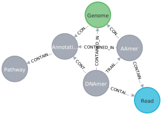

Neo4J Notes
Schema for a pan-meta-genome graph with annotations (multi-dataset)

//pan-meta-genome-graph-with-annotations
CREATE (dnamer:DNAmer {label: "DNAmer"})
CREATE (read:Read {label: "Read"})
CREATE (aamer:AAmer {label: "AAmer"})
CREATE (dataset:Dataset {label: "Dataset"})
CREATE (environment:Environment {label: "Environment"})
CREATE (genome:Genome {label: "Genome"})
CREATE (species:Species {label: "Species"})
CREATE (genus:Genus {label: "Genus"})
CREATE (family:Family {label: "Family"})
CREATE (order:Order {label: "Order"})
CREATE (subclass:Subclass {label: "Subclass"})
CREATE (class:Class {label: "Class"})
CREATE (subphylum:Subphylum {label: "Subphylum"})
CREATE (phylum:Phylum {label: "Phylum"})
CREATE (subkingdom:Subkingdom {label: "Subkingdom"})
CREATE (kingdom:Kingdom {label: "Kingdom"})
CREATE (clade:Clade {label: "Clade"})
CREATE (superkingdom:Superkingdom {label: "Superkingdom"})
CREATE (root:Root {label: "Root"})
CREATE (annotation:Annotation {label: "Annotation"})
CREATE (entity:Entity {label: "Entity"})
CREATE (pathway:Pathway {label: "Pathway"})
CREATE (toxin:Toxin {label:"Toxin"})
CREATE (virulencefactor:VirulenceFactor {label: "VirulenceFactor"})
CREATE (antibioticresistance:AntibioticResistance {label: "AntibioticResistance"})
CREATE (integrase:Integrase {label: "Integrase"})
CREATE (host:Entity {label: "Host"})
CREATE (entity)-[entity_host:HOST_OF]->(host)
CREATE (annotation)-[annotation_integrase:ISA]->(integrase)
CREATE (annotation)-[annotation_antibioticresistance:CONFERS]->(antibioticresistance)
CREATE (annotation)-[annotation_virulencefator:ISA]->(virulencefactor)
CREATE (annotation)-[annotation_toxin:ISA]->(toxin)
CREATE (host)-[host_species:ISA]->(species)
CREATE (host)-[host_genome:GENOME_OF]->(genome)
CREATE (dnamer)-[dnamer_annotation:CONTAINED_IN]->(annotation)
CREATE (aamer)-[aamer_annotation:CONTAINED_IN]->(annotation)
CREATE (genome)-[genome_annotation:CONTAINED_IN]->(annotation)
CREATE (superkingdom)-[superkingdom_root:PARENT]->(root)
CREATE (clade)-[clade_superkingdom:PARENT]->(superkingdom)
CREATE (kingdom)-[kingdom_clade:PARENT]->(clade)
CREATE (subkingdom)-[subkingdom_kingdom:PARENT]->(kingdom)
CREATE (phylum)-[phylum_subkingdom:PARENT]->(subkingdom)
CREATE (subphylum)-[subphylum_phylum:PARENT]->(phylum)
CREATE (class)-[class_subphylum:PARENT]->(subphylum)
CREATE (subclass)-[subclass_class:PARENT]->(class)
CREATE (order)-[order_subclass:PARENT]->(subclass)
CREATE (family)-[family_order:PARENT]->(order)
CREATE (genus)-[genus_family:PARENT]->(family)
CREATE (species)-[species_genus:PARENT]->(genus)
CREATE (entity)-[entity_species:ISA]->(species)
CREATE (dnamer)-[dnamer_genome:CONTAINED_IN]->(genome)
CREATE (dataset)-[dataset_environment:SOURCED_FROM]->(environment)
CREATE (read)-[read_dataset:CONTAINED_IN]->(dataset)
CREATE (aamer)-[aamer_read:CONTAINED_IN]->(read)
CREATE (dnamer)-[dnamer_read:CONTAINED_IN]->(read)
CREATE (dnamer)-[dnamer_aamer:TRANSLATES_TO]->(aamer)
CREATE (aamer)-[aamer_genome:CONTAINED_IN]->(genome)
CREATE (genome)-[genome_entity:GENOME_OF]->(entity)
CREATE (annotation)-[annotation_pathway:CONTAINED_IN]->(pathway)
RETURN dnamer,
read,
aamer,
dataset,
environment,
genome,
species,
genus,
family,
order,
subclass,
class,
subphylum,
phylum,
subkingdom,
kingdom,
clade,
superkingdom,
root,
annotation,
entity,
pathway,
annotation_pathway,
toxin,
virulencefactor,
antibioticresistance,
integrase,
host,
entity_host,
annotation_integrase,
annotation_antibioticresistance,
annotation_virulencefator,
annotation_toxin,
host_species,
host_genome
Schema for a pan-meta-genome graph (multi-dataset)

//pan-meta-genome-graph
CREATE (dnamer:DNAmer {label: "DNAmer"})
CREATE (read:Read {label: "Read"})
CREATE (aamer:AAmer {label: "AAmer"})
CREATE (dataset:Dataset {label: "Dataset"})
CREATE (environment:Environment {label: "Environment"})
CREATE (genome:Genome {label: "Genome"})
CREATE (species:Species {label: "Species"})
CREATE (genus:Genus {label: "Genus"})
CREATE (family:Family {label: "Family"})
CREATE (order:Order {label: "Order"})
CREATE (subclass:Subclass {label: "Subclass"})
CREATE (class:Class {label: "Class"})
CREATE (subphylum:Subphylum {label: "Subphylum"})
CREATE (phylum:Phylum {label: "Phylum"})
CREATE (subkingdom:Subkingdom {label: "Subkingdom"})
CREATE (kingdom:Kingdom {label: "Kingdom"})
CREATE (clade:Clade {label: "Clade"})
CREATE (superkingdom:Superkingdom {label: "Superkingdom"})
CREATE (root:Root {label: "Root"})
CREATE (annotation:Annotation {label: "Annotation"})
CREATE (entity:Entity {label: "Entity"})
CREATE (pathway:Pathway {label: "Pathway"})
CREATE (dnamer)-[dnamer_annotation:CONTAINED_IN]->(annotation)
CREATE (aamer)-[aamer_annotation:CONTAINED_IN]->(annotation)
CREATE (genome)-[genome_annotation:CONTAINED_IN]->(annotation)
CREATE (superkingdom)-[superkingdom_root:PARENT]->(root)
CREATE (clade)-[clade_superkingdom:PARENT]->(superkingdom)
CREATE (kingdom)-[kingdom_clade:PARENT]->(clade)
CREATE (subkingdom)-[subkingdom_kingdom:PARENT]->(kingdom)
CREATE (phylum)-[phylum_subkingdom:PARENT]->(subkingdom)
CREATE (subphylum)-[subphylum_phylum:PARENT]->(phylum)
CREATE (class)-[class_subphylum:PARENT]->(subphylum)
CREATE (subclass)-[subclass_class:PARENT]->(class)
CREATE (order)-[order_subclass:PARENT]->(subclass)
CREATE (family)-[family_order:PARENT]->(order)
CREATE (genus)-[genus_family:PARENT]->(family)
CREATE (species)-[species_genus:PARENT]->(genus)
CREATE (entity)-[entity_species:ISA]->(species)
CREATE (dnamer)-[dnamer_genome:CONTAINED_IN]->(genome)
CREATE (dataset)-[dataset_environment:SOURCED_FROM]->(environment)
CREATE (read)-[read_dataset:CONTAINED_IN]->(dataset)
CREATE (aamer)-[aamer_read:CONTAINED_IN]->(read)
CREATE (dnamer)-[dnamer_read:CONTAINED_IN]->(read)
CREATE (dnamer)-[dnamer_aamer:TRANSLATES_TO]->(aamer)
CREATE (aamer)-[aamer_genome:CONTAINED_IN]->(genome)
CREATE (genome)-[genome_entity:GENOME_OF]->(entity)
CREATE (annotation)-[annotation_pathway:CONTAINED_IN]->(pathway)
RETURN dnamer,
read,
aamer,
dataset,
environment,
genome,
species,
genus,
family,
order,
subclass,
class,
subphylum,
phylum,
subkingdom,
kingdom,
clade,
superkingdom,
root,
annotation,
entity,
pathway,
annotation_pathwaySchema for a metagenome graph (single dataset)

//meta-genome-graph
CREATE (dnamer:DNAmer {label: "DNAmer"})
CREATE (aamer:AAmer {label: "AAmer"})
CREATE (read:Read {label: "Read"})
CREATE (genome:Genome {label: "Genome"})
CREATE (annotation:Annotation {label: "Annotation"})
CREATE (pathway:Pathway {label: "Pathway"})
CREATE (dnamer)-[dnamer_annotation:CONTAINED_IN]->(annotation)
CREATE (aamer)-[aamer_annotation:CONTAINED_IN]->(annotation)
CREATE (genome)-[genome_annotation:CONTAINED_IN]->(annotation)
CREATE (annotation)-[annotation_pathway:CONTAINED_IN]->(pathway)
CREATE (dnamer)-[dnamer_genome:CONTAINED_IN]->(genome)
CREATE (aamer)-[aamer_read:CONTAINED_IN]->(read)
CREATE (dnamer)-[dnamer_read:CONTAINED_IN]->(read)
CREATE (dnamer)-[dnamer_aamer:TRANSLATES_TO]->(aamer)
CREATE (aamer)-[aamer_genome:CONTAINED_IN]->(genome)
RETURN dnamer,
read,
aamer,
genome,
annotation,
pathway,
annotation_pathwayExample Queries
English
CYPHERGive me the genome of entity x
Give me the pangenome of species x
Give me the pangenome of order x
Give me all kmers in species x
Finding spacers:
Give me all kmers in species x matching pattern y
Give me all datasets containing species x
Give me all datasets containing pathway x
Give me all reads supporting path/variant x
Creating a blank database
https://neo4j.com/developer/neo4j-desktop/#desktop-create-project
Interacting with a Database
- username: neo4j
- password: password
- I set this and yours may be different!
https://neo4j.com/developer/manage-multiple-databases/
https://stackoverflow.com/a/29658062 https://neo4j.com/docs/operations-manual/current/tools/cypher-shell/#cypher-shell-syntax https://contentaudience.com/guides/neo4j-cli-cypher-shell/ https://neo4j.com/developer/kb/how-do-i-authenticate-with-cypher-shell-without-specifying-the-username-and-password-on-the-command-line/
Database
- Basic Alphabets
- Canonical Nucleic Acids
- Canonical Amino Acids
- Types of paths
- DNAmers
- DNAmers are canonical dna sequences of k-length
- we track all odd primes between 1 and 31 for DNA mers
- we track DNAmers 3, 9, 15, and 21 for interoperability between AAmers and the DNAmers they translate from
- kmers store both their full sequences AND their sequences as paths through shorter kmers
- AAmers
- we track all odd primes between 1 and 5 for AA mers
- kmers store both their full sequences AND their sequences as paths through shorter kmers
- Genomes
- genomes are paths through DNA kmers
- annotations
- annotations are paths through DNA kmers and possibly also through AA kmers
- DNAmers
Learning to use Cyper CLI
usage: cypher-shell [-h] [-a ADDRESS] [-u USERNAME] [-p PASSWORD] [--encryption {true,false,default}] [-d DATABASE]
[--format {auto,verbose,plain}] [-P PARAM] [--debug] [--non-interactive] [--sample-rows SAMPLE-ROWS]
[--wrap {true,false}] [-v] [--driver-version] [-f FILE] [--fail-fast | --fail-at-end] [cypher]
A command line shell where you can execute Cypher against an instance of Neo4j. By default the shell is interactive but you can use it
for scripting by passing cypher directly on the command line or by piping a file with cypher statements (requires Powershell on Windows).
example of piping a file:
cat some-cypher.txt | cypher-shell
positional arguments:
cypher an optional string of cypher to execute and then exit
optional arguments:
-h, --help show this help message and exit
--fail-fast exit and report failure on first error when reading from file (this is the default behavior)
--fail-at-end exit and report failures at end of input when reading from file
--format {auto,verbose,plain}
desired output format, verbose displays results in tabular format and prints statistics, plain displays data
with minimal formatting (default: auto)
-P PARAM, --param PARAM
Add a parameter to this session. Example: `-P "number => 3"`. This argument can be specified multiple times.
--debug print additional debug information (default: false)
--non-interactive force non-interactive mode, only useful if auto-detection fails (like on Windows) (default: false)
--sample-rows SAMPLE-ROWS
number of rows sampled to compute table widths (only for format=VERBOSE) (default: 1000)
--wrap {true,false} wrap table column values if column is too narrow (only for format=VERBOSE) (default: true)
-v, --version print version of cypher-shell and exit (default: false)
--driver-version print version of the Neo4j Driver used and exit (default: false)
-f FILE, --file FILE Pass a file with cypher statements to be executed. After the statements have been executed cypher-shell will be
shutdown
connection arguments:
-a ADDRESS, --address ADDRESS
address and port to connect to (default: neo4j://localhost:7687)
-u USERNAME, --username USERNAME
username to connect as. Can also be specified using environment variable NEO4J_USERNAME (default: )
-p PASSWORD, --password PASSWORD
password to connect with. Can also be specified using environment variable NEO4J_PASSWORD (default: )
--encryption {true,false,default}
whether the connection to Neo4j should be encrypted. This must be consistent with Neo4j's configuration. If
choosing 'default' the encryption setting is deduced from the specified address. For example the 'neo4j+ssc'
protocol would use encryption. (default: default)
-d DATABASE, --database DATABASE
database to connect to. Can also be specified using environment variable NEO4J_DATABASE (default: )List databases
# verbose outputs mdtable with pretty printing
cypher-shell --address neo4j://localhost:7687 --username neo4j --password password --database system --format verbose 'show databases'
# plain outputs a CSV
cypher-shell --address neo4j://localhost:7687 --username neo4j --password password --database system --format plain 'show databases'
# auto uses verbose
cypher-shell --address neo4j://localhost:7687 --username neo4j --password password --database system --format auto 'show databases'Creating a database for a specific dataset
cypher-shell --address neo4j://localhost:7687 --username neo4j --password password --database system --format auto 'create database test'Show schema
cypher-shell --address neo4j://localhost:7687 --username neo4j --password password --database test --format auto 'CALL db.schema.visualization()'Return all nodes
cypher-shell --address neo4j://localhost:7687 --username neo4j --password password --database test --format auto 'MATCH (n) RETURN n'Delete entire graph
cypher-shell --address neo4j://localhost:7687 --username neo4j --password password --database test --format auto 'MATCH (n) DETACH DELETE n'Add kmers and connections in one go
cypher-shell --address neo4j://localhost:7687 --username neo4j --password password --database test --format auto 'MERGE (d1:DNAmer {sequence: "A"})-[d1d2:CONNECTION {orientations: [1,1]}]->(d2:DNAmer {sequence: "T"}) RETURN *'Add kmers and connections in separate steps
cypher-shell --address neo4j://localhost:7687 --username neo4j --password password --database test --format auto 'MERGE (:DNAmer {sequence: "A"})'
cypher-shell --address neo4j://localhost:7687 --username neo4j --password password --database test --format auto 'MERGE (:DNAmer {sequence: "T"})'
cypher-shell --address neo4j://localhost:7687 --username neo4j --password password --database test --format auto 'MERGE (d1:DNAmer {sequence: "A"})-[d1d2:CONNECTION {orientations: [1,1]}]->(d2:DNAmer {sequence: "T"}) RETURN *'Find the import folder on
# https://neo4j.com/docs/operations-manual/current/configuration/file-locations/
/Users/cameronprybol/Library/Application Support/Neo4j Desktop/Application/relate-data/dbmss/dbms-8ab8baac-5dea-4137-bb24-e0b426447940/importfind all nmers
cypher-shell --address neo4j://localhost:7687 --username neo4j --password password --database test --format auto 'MATCH (d:DNAmer) WHERE size(d.sequence) = 1 return d'create import uniqueness constraints
CREATE CONSTRAINT ON (d:Dnamer) ASSERT d.sequence IS UNIQUE;
CREATE CONSTRAINT ON (f:Fasta) ASSERT f.identifier IS UNIQUE;
CREATE CONSTRAINT ON (f:Fastq) ASSERT f.identifier IS UNIQUE;data import
USING PERIODIC COMMIT
LOAD CSV WITH HEADERS FROM
'file:///path/to/file' AS line
with line
CREATE (n:Node {id: line.`id`})data conversions for loading CSV
TOINT
TOFLOAT
https://neo4j.com/docs/cypher-manual/current/functions/merge nodes to avoid creating again
!important!
When merging new information into nodes, need to first match on unique key to get all existing fields. Merging matches on all fields, and merging on partial matches will duplicate nodes which we don't want